The game I made; Q-Bits is a survival game where the red square has to survive being hit by the blue square.
This is how I completed all aspects of the task:
Basic requirement 1.
Code for the game over screen to show it can be completed:
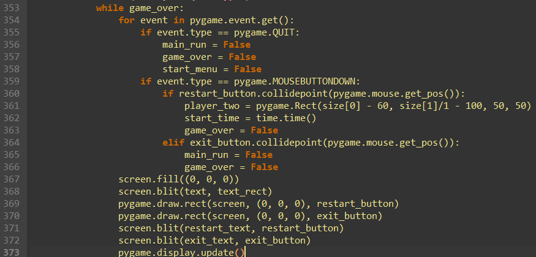
Randomness aspect to the game (When played in single player the blue cube moves randomly):
Basic requirement 2.
4 Inputs needed to move the blue and red cube in multiplayer:
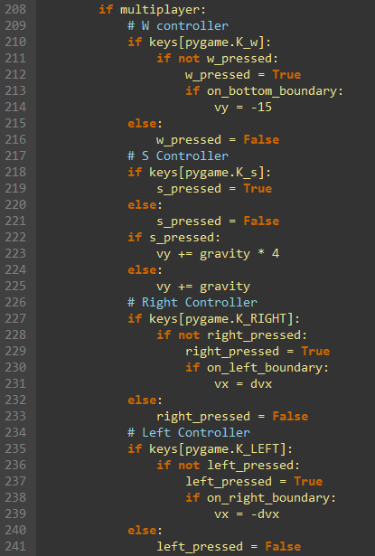
Basic requirement 3.
Single player, Multiplayer, and Simulation as seen in the picture:
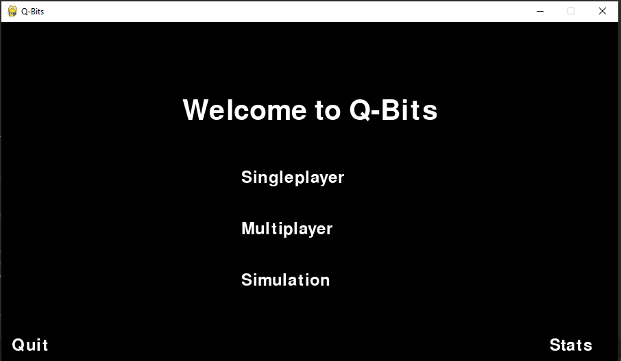
Advanced requirement 1.
Data being stored in a csv file when game ends:
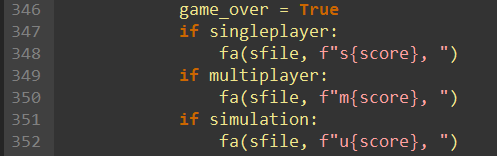
Data inside the csv file:
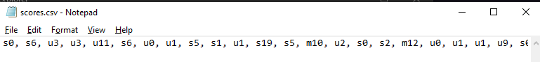
This feature ensures that the data is saved even after the game has been closed.
Advanced requirement 2.
Graphs that came from the database:
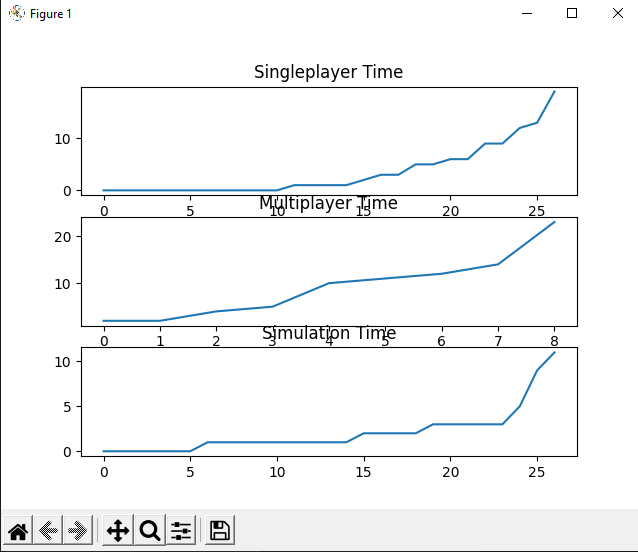
Mean calculated from the graphs:
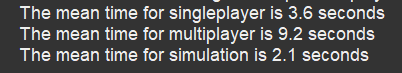
Code for the above:
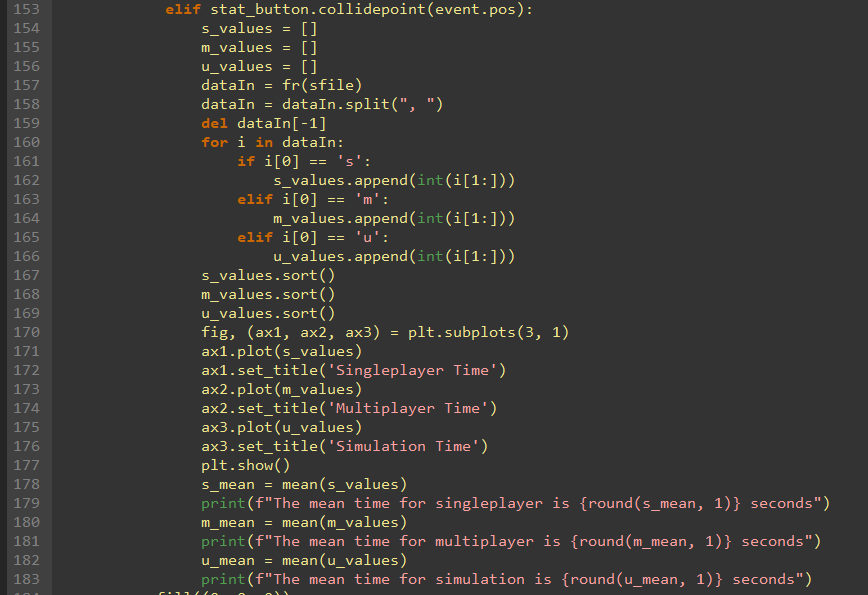
Advanced requirement 3.
I can test the hypothesis: If I increase the speed of the blue block, it will be harder for the computer to get a
higher score.
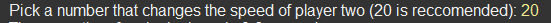
Code:
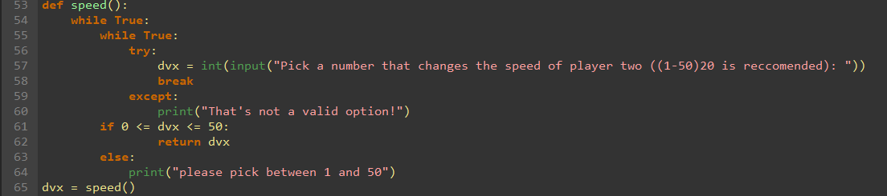
This is how I met all the requirements also it is important to note that the aim of the game is to achieve the
highest score possible for player 1 (red) and to get the lowest score possible for player 2 (blue).
Investigation and Plan
The description of my game is that it is a simple survival game where red is trying to avoid blue by using the
w and s key while blue is using the left arrow and right arrow to try and hit red. There is a timer that counts
how long the player survives and the longer it survives the better. The two blocks are on different axes and
their resting position is on the same x axis. The red square moves up and down on the y axis and the blue square
moves left and right on the x axis. That is the basic concept of the game.
The goals of my artefact:
Have the possibility of playing in multiplayer, single player and allow simulated play. This is one of the
basic requirements and should be done.
Allow ways to be able to outplay the computer or the player you are against.
Be able to have serialization (store data). This is also one of the requirements and I feel comfortable
working with data.
Be easy to use and look somewhat decent. I would like the examiner to enjoy playing the game.
Use techniques and packages I have not used before. I want to learn new things with this project, and I feel
pygame is a good thing to learn. I would also like to learn some elements of threading.
Be balanced and fair. This is probably the hardest part of designing the artefact as I find it quite hard to
imagine how I could make this game balanced.
A score system to count how much time red has survived.
A way to see stats in game or outside of the game.
Power-ups for example faster speed, increased gravity, invulnerability, score multiplier etc.
Somewhat good responsiveness. I feel if the game felt laggy, it would take from the enjoyment.
I started to do all this by grasping major elements of Pygame. I had to learn how to use the screen in pygame[1]. I also had to learn how to make key inputs in pygame[2]. Also, I found out while messing with pygame, there was a major problem. The time.wait()
function did not work as it made the whole game stop. To find a way around this I decided to learn threading.[3]
This is about all I needed to learn as I have a lot of experience with coding and everything else was quite okay
to code.
Design
The ways I tackled the goals
The multiplayer version of the game is done by allowing the user to use w, s,
right arrow and left arrow to control player 1 (red) and player 2 (blue). The single player aspect of the game is
achieved by allowing the user to only control player 1 (red) using the w key and s key while letting the computer
control player 2 (blue) using the random package. Simulated play is achieved by letting the computer control
player 1 (red) and player 2 (blue) using the random package. The way I can make it so that outplays can be done in
game is that whenever player 1 (red) presses the s key the gravity is increased so they fall faster. Player 2
(blue) can outplay player 1 (red) by spamming left and right and catch red off guard by stuttering their moves.
Serialization is achieved by using simple file writing, appending and reading to a csv file. The game can have
clearly labelled buttons which makes it easier to use. Also, there are only 4 possible buttons to press so that
also makes playing easier. Using blogs and resources online it should be easy for me to learn new things for this
project. By making the speed of player 1 (red) and player 2 (blue) the same, it should be easy to make the game
balanced. That is the logical conclusion I came up with but that might change when I do create the code. After
researching more about pygame I found it is quite easy to make a counter that counts the time the player survives
for. I used this as a reference and modified the code so that it fit my needs[4]. I
can achieve being able to see stats by adding a button that displays the stats that is accessed from the same file
that I store the data in which makes it easy for me to complete that goal. The only way I can add power-ups is to
add objects that randomly spawn along the x axis and y axis and if one of the players touch it, then they gain the
power up. This would lead to strategies that would make it easier for the players to outsmart each other by
waiting for the exact time player 1 (red) lands after picking up a power-up. I can make sure the game isn't under
stress to make responsiveness better.
Flowchart
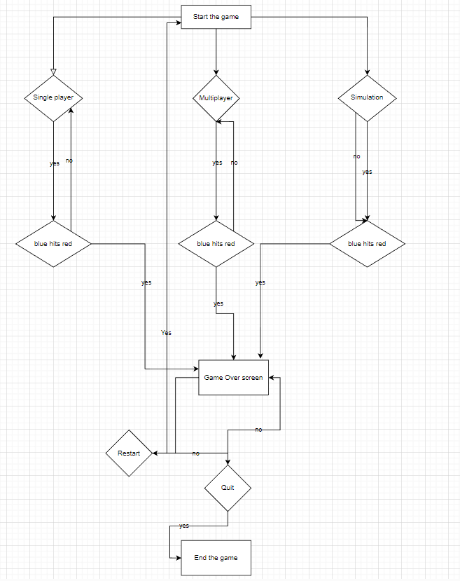
The modelling and abstraction used for this model is limiting the graphic quality of the players, start menu
screen and game over screen. This is done to save time and focus on the base game itself.
Implementation
I started off by creating the base of the pygame screen which is how you start any pygame project and set its
width and height. I then created the multiplayer version of the game using the aforementioned references[1][2]. After that I designed the multiplayer version
of the game as I felt it was the easiest to modify to transform into simulation and single player. First, I made
it so that whenever you press w or s the vy and –vy changes and also added gravity. After I set that in place, I
created the cubes and placed them at the correct x and y pixels. Then I created a background image so that I
could see what was happening on screen more clearly. Then, I made it possible for the red block to move by
changing its position with a += vy or -= vy * gravity depending on whether w or s was pressed. Then I took the
same logic and applied it to the blue block but with vx and –vx instead. After this, I set up the boundaries so
that the blocks don’t fall out of the screen and added collision. Then, I had reached the hardest part of the
code, I had to make it so that the user can't press w while red is off the ground. It took a while, but I came
to the solution of adding booleans that check whether the red square is touching the bottom boundary or not. I
then applied that to the blue square by adding checks to see if the blue square is touching the left boundary or
right boundary, and if it wasn’t touching either no further input could be given. This allowed it so that you
couldn’t change directions during movement which makes the game fairer. After, I basically had the multiplayer
done and for the single player I removed the ability to press left arrow and right arrow and replaced it with a
random picker which basically has a 1 in 10 chance to pick either left or right. This algorithm was essential to
allow the single player and simulation to work. It also adds randomness to the game. The simulation version of
the game is the same as single player except that w was also added to the random picker. I then implemented the
score system using the modified reference[4]. After the score system was in place
it allowed me to be able to store the data in a csv file and I used a cool trick that adds an s, u or m
depending on what game mode you are playing before the data. This makes it so that only 1 csv file is needed to
run the game. I then added a way to change vx to allow hypothesis testing and added a way to clear the data if
needed. After that I used matplotlib to plot the data and used a standard way to calculate mean. I then added
all of this on a menu screen and finished my code.
Testing
The main thing I tested is the positioning of the blocks at a pixel level so that it looks good.Also, I tested
to see if the speed works between 1 and 50 by just putting in inputs under 1 and over 50 until I modified the
code to work correctly. Testing to see if the buttons worked and also if the button text was in the correct
place was also a bit tricky. Finding the sweet spot for gravity was time consuming and also the speed at which
the player moves the best and least laggy at was also quite frustrating but it all worked out in the end. The
hardest test I performed is the unit testing on the system that checks whether the blue block is on the left
boundary or not, which is vital as if this is not accurate then the game would become completely unfair and
unpredictable by allowing the blue block to change directions while moving. The way I achieved this is through
train and error and a test case:
Evaluation
I have successfully implemented multiplayer, single player and simulated play. The 1 in 10 randomness of the
blue player moving has made the game unpredictable and allows outplays by the computer. Also, the ability to
increase your gravity by holding s has made it so that you can fall faster to respond to blues attacks faster.
This has made outplays possible. Serialization has been implemented through csv files and is saved through
different run-throughs of the game. As there are only 4 inputs and the buttons are labelled well, it is easy to
use. The main game looks decent, and I am happy with that. I have successfully used pygame to a great extent and
learned a lot about multi-threading although I did not use it in the game. The game is balanced as the speed of
the players are the same and both players have a good chance of winning. The score system has been fully
implemented. The stats are visualized but I would like to add a leader board system in the future. Power-ups
have not been implemented although I have thought of a way to do it using multi-threading and can definitely be
implemented in the future. The responsiveness is good and there is no delay between pressing an input button and
the character moving.
I believe that the hitboxes don’t work sometimes, and I think I could fix this using multi-threading by getting
the distance of the bottom of the character and the floor on a separate thread and then making it so that player
1 (red) can be hit mid-air.
References
[1]Guide to Pygame (2000-2023)
Available at: # Accessed: (07/02/2023)
[2]Getting keyboard input from Pygame (08/06/2022)
Available at: # Accessed:
(20/02/2023)
[3]An Intro to Threading in Python (2019 (around))
Available at: # Accessed: (20/02/2023)
[4]Counting time in Pygame (08/05.2017)
Available at: # Accessed:
(10/03/2023)